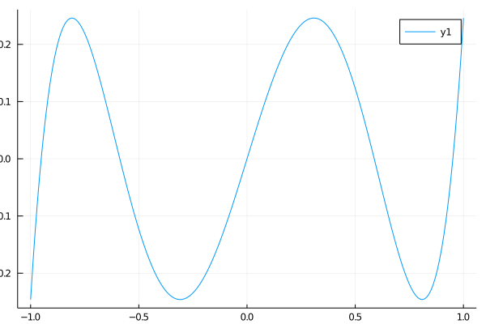
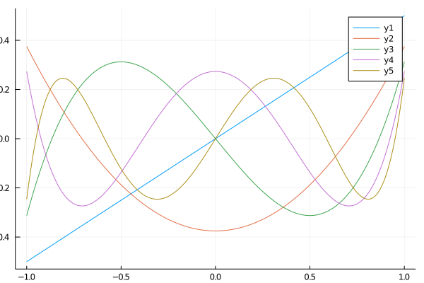
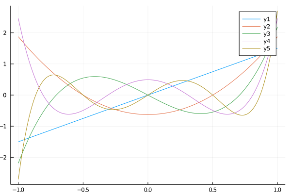

Chebyshev
The Chebyshev polynomials are two families of orthogonal polynomials over the univariate domain $x \in [-1,1]$. They are special cases of the Jacobi polynomials for $\alpha = \beta = -1/2$ for the Chebyshev polynomials of the first kind, and $\alpha = \beta = 1/2$ for the Chebyshev polynomials of the second kind. The implementation in this library uses a recurrence relation for the Jacobi polynomials to compute them. It is fast and stable to high order $n$.
Usage
The Chebyshev usage follows from the jacobi one, in that the input is an array or a scalar with substantially higher performance when invoked on arrays. See the Jacobi documentation for more detailed information on this matter.
The key API is mirrored, substituting jacobi for cheby1 or cheby2 to produce cheby1, cheby1_series, and cheby1_sum and associated cheby2 functions.
using OpticsPolynomials
using Plots
x = collect(-1:0.01:1);
y = cheby1(5,x);
plot(x,y)
png("cheby1-5");/home/travis/.julia/packages/GR/BwGt2/src/../deps/gr/bin/gksqt: error while loading shared libraries: libQt5Widgets.so.5: cannot open shared object file: No such file or directory connect: Connection refused GKS: can't connect to GKS socket application GKS: Open failed in routine OPEN_WS GKS: GKS not in proper state. GKS must be either in the state WSOP or WSAC in routine ACTIVATE_WS

The visual difference between the polynomials of the first and second kind can be seen:
using OpticsPolynomials
using Plots
x = collect(-1:0.01:1);
y = cheby1_series([1,2,3,4,5],x);
plot(x,y)
png("cheby1-series");
y = cheby2_series([1,2,3,4,5],x);
plot(x,y)
png("cheby2-series");/home/travis/.julia/packages/GR/BwGt2/src/../deps/gr/bin/gksqt: error while loading shared libraries: libQt5Widgets.so.5: cannot open shared object file: No such file or directory connect: Connection refused GKS: can't connect to GKS socket application GKS: Open failed in routine OPEN_WS GKS: GKS not in proper state. GKS must be either in the state WSOP or WSAC in routine ACTIVATE_WS /home/travis/.julia/packages/GR/BwGt2/src/../deps/gr/bin/gksqt: error while loading shared libraries: libQt5Widgets.so.5: cannot open shared object file: No such file or directory connect: Connection refused GKS: can't connect to GKS socket application GKS: Open failed in routine OPEN_WS GKS: GKS not in proper state. GKS must be either in the state WSOP or WSAC in routine ACTIVATE_WS
First Kind

Second Kind

Core Functions
OpticsPolynomials.cheby1 — Functioncheby1(n, x)Compute the Chebyshev polynomial of the first kind of order n at point x.
This family of Chebyshev polynomials are a special case of the Jacobi polynomials with α, β = -1/2.
See also: cheby1_series, cheby1_sum
OpticsPolynomials.cheby1_series — Functioncheby1_series(ns, α, β, x)Compute a series of Chebyshev polynomials of the first kind of orders n. Returns an array with shape (size(x)..., length(ns)). That is, the final dimension contains the modes and the first dimension(s) are spatial.
See also: cheby1, cheby1_sum
OpticsPolynomials.cheby1_sum — Functioncheby1_sum(ns, weights, x)Compute a sum of Chebyshev polynomial of the first kind of order n weighted by weights.
See also: cheby1, cheby1_series
OpticsPolynomials.cheby2 — Functioncheby2(n, x)Compute the Chebyshev polynomial of the second kind of order n at point x.
This family of Chebyshev polynomials are a special case of the Jacobi polynomials with α, β = 1/2.
See also: cheby2_series, cheby2_sum
OpticsPolynomials.cheby2_series — Functioncheby2_series(ns, α, β, x)Compute a series of Chebyshev polynomials of the second kind of orders n. Returns an array with shape (size(x)..., length(ns)). That is, the final dimension contains the modes and the first dimension(s) are spatial.
See also: cheby1, cheby1_sum
OpticsPolynomials.cheby2_sum — Functioncheby1_sum(ns, weights, x)Compute a sum of Chebyshev polynomial of the second kind of order n weighted by weights.
See also: cheby1, cheby1_series